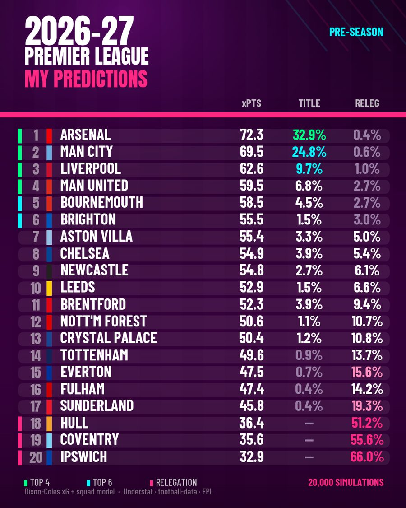
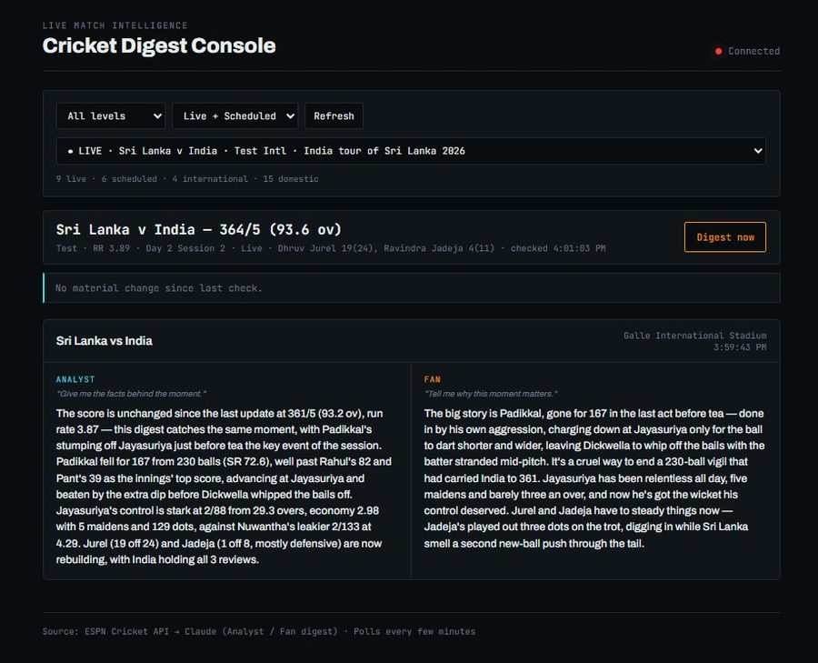
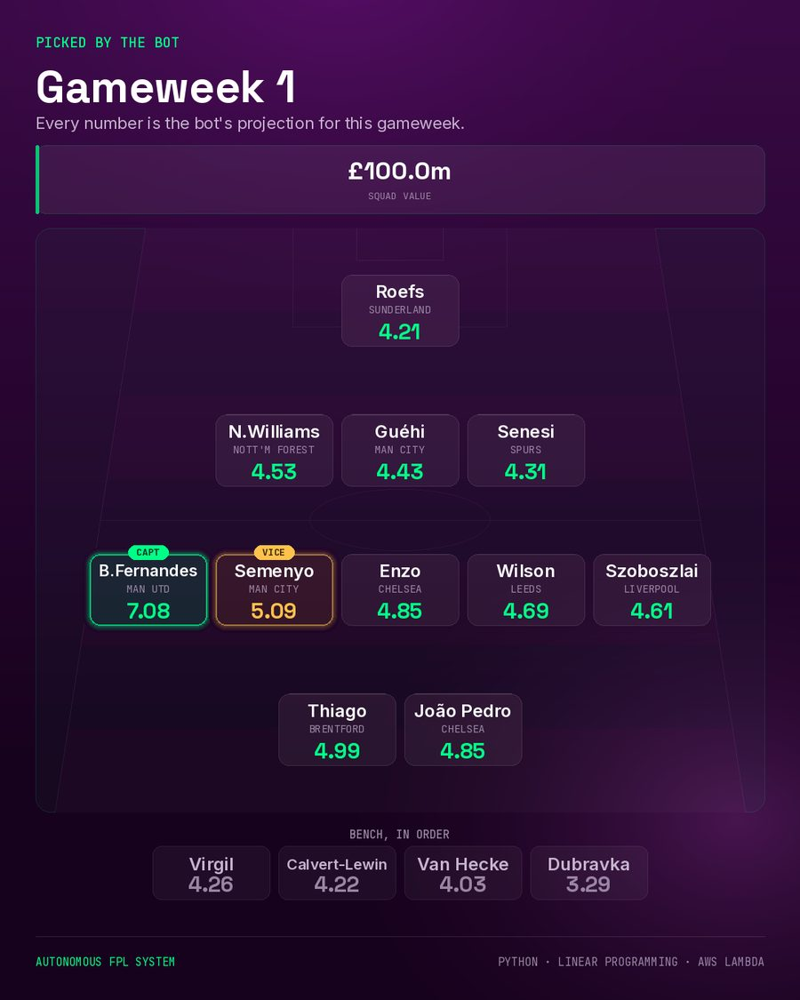

Hi, I'm Kartik Shanbhag. I'm a product manager at Sportz Interactive, building real-time data products — and these are the things I built to prove I could.
Five years in sports data at broadcast scale. I own products where a defect isn't a bug report, it's visible to everyone watching. Auctions broadcast live. APIs behind scoreboards.
A product manager should be able to show you the thing. Most of my professional work sits behind client NDAs, so I build the same class of system alone, in public, and publish what failed.
Running right now
This is live, and I didn't touch it.
The figures below are pulled straight from my Premier League model's own output file, which it rewrites after every gameweek. If they've changed since you last looked, that's the model, not me.
At Sportz Interactive · 2021 to present
Five years, counted.
Client projects delivered
Feeds, APIs, dashboards and live event platforms, taken from first requirement through to client sign-off.
Clients shipped for
Broadcasters, OTT platforms, fantasy operators, tech companies and governing bodies, in India and abroad.
Auctions and drafts powered
The Indian Premier League, Women's Premier League, Pro Kabaddi League, Indian Street Premier League, The Hundred and the T10 leagues — broadcast live, where there is no second take.
Sports taken end to end
Cricket, Football, Tennis, Kabaddi, Kho Kho, Hockey, Rugby, Curling, Volleyball, Formula One, Basketball, Baseball and Golf.
Days to stand up a live auction platform
A mock auction for Kolkata Knight Riders, specified, built and on screen inside a week.
Sports built from nothing
Ultimate Kho Kho and curling — ingestion, API design and client integration where no data feed had existed before.
Clients I have worked with
Delivered through Sportz Interactive, 2021 to present. Broadcasters, OTT platforms, fantasy operators, tech companies and governing bodies.
Built alone, outside work · every repository public
Everything here is one click from the code that produced it.

Premier League Supercomputer
Predicts the table, then grades itself against the bookmakers.
Read the case study
Cricket AI Digest
One live feed in. An analyst briefing and a fan briefing out.
Read the case study
FPL Auto Manager
Picks the team, submits it, and gets marked against a human.
Read the case studyAlso here
I write about football, cricket and the systems behind them.
Five pieces, mostly written because I'd just finished building the data and wanted to know what it said. Seven Tableau dashboards, four of which became articles.